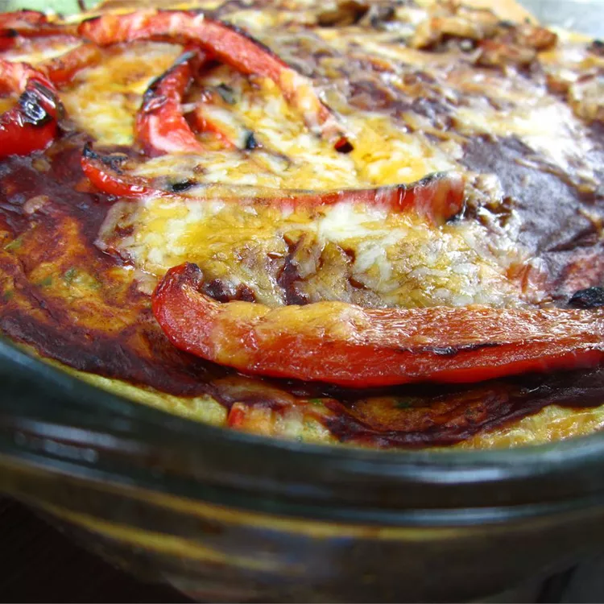

Mexican Egg Bake

Description
A Mexican Egg Bake, often referred to as a Mexican-inspired breakfast
casserole or egg dish, combines traditional Mexican flavors and
ingredients into a hearty and satisfying dish.
ingredients
- Eggs: Typically 6-8 large eggs, beaten.
- Onion: 1/2 cup finely chopped onion.
-
Tomatoes: 1 cup diced tomatoes (fresh or canned).
-
Jalapeños (optional): 1-2 jalapeños, seeded and finely
diced for added heat.
-
Chorizo or Ham: 1 cup cooked and crumbled chorizo
sausage or diced ham.
-
Cheese: 1 1/2 cups shredded Mexican cheese blend (such
as cheddar, Monterey Jack, and/or queso fresco).
-
Tortilla Chips or Tortillas: 1 cup crushed tortilla
chips or torn corn tortillas.
-
Milk or Cream: 1/2 cup milk or cream (to add creaminess
to the egg mixture).
-
Spices and Seasonings:
- 1 teaspoon ground cumin
- 1/2 teaspoon chili powder
- 1/2 teaspoon paprika
- Salt and pepper to taste
-
Fresh Cilantro: 2 tablespoons chopped cilantro, plus
more for garnish.
- SalsaFor serving on the side, if desired.